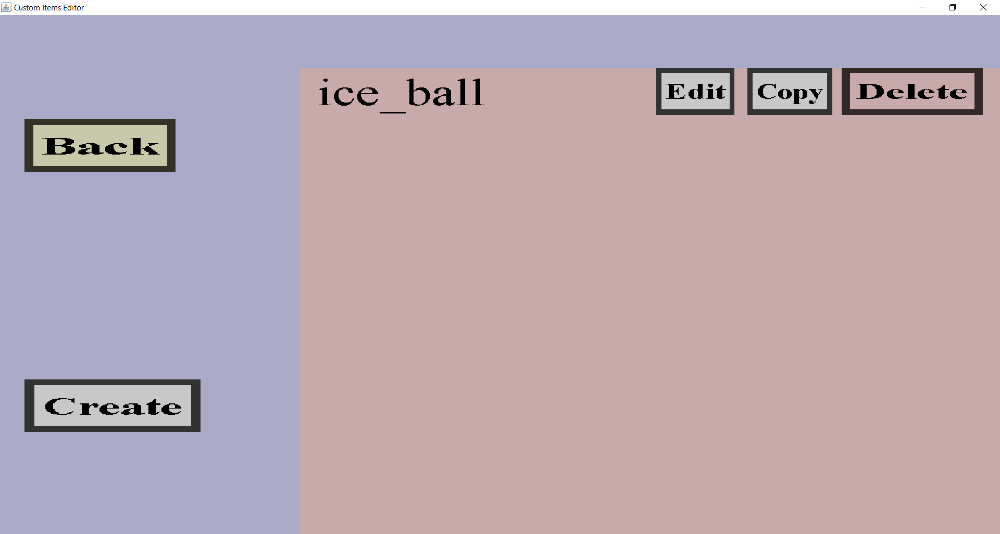

In the projectile overview, you can see all custom projectiles you have created so far as well
as edit them or delete them. From here, you can also create new custom projectiles.
If you have made a single custom projectile called 'ice_ball', it should look like this:

On the left are the 'Back' and 'Create' button. Additionally, you should see the names of
all custom projectiles you have created to far as well as an 'Edit', 'Copy' and 'Delete'
button for each. If you have more custom projectiles than fit on your screen, you can
scroll down with your mouse wheel or the arrow keys.
-
The 'Back' button will take you back to the projectile portal.
-
The 'Create' button will take you to the projectile edit menu
where you can create a new custom projectile.
-
Clicking on any of the 'Edit' buttons will take you to the projectile edit menu
where you can edit the corresponding custom projectile.
-
Clicking on any of the 'Copy' buttons will take you to the projectile edit menu
where you can create a new custom projectile, but all the edit fields will be filled with the properties
of the custom projectile you're copying.
-
Clicking on the 'Delete' button will remove the corresponding custom projectile from the item set.